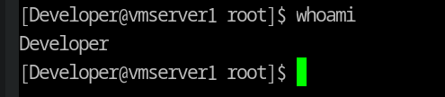

Table of Contents
1. 课题研究的背景及意义
- 项目需求
- 为增强大一新生编程兴趣，提升编程能力，计算机学院每年都举行中工大一新生刷题活动，引导学生在指定网站通过刷题编程，训练编程，活动抽取参与人数的60%设置奖项，为了统计学生的刷题情况，开发一款基于web的新生在线做题管理系统。
- 虽然计算机技术更新换代比较快，随之时间的流逝，有些技术和知识会过时，但计算机里的‘四大件’还是能使你的知识投资更稳定的.计算机组成原理，操作系统，计算机网络，数据结构与算法，这是一个软件开发工程师自我修养，这个毕业设计是针对数据结构与算法设计的一个刷题统计网站，曾经有句名言：程序=数据结构+算法，这虽然是个统计刷题的网站，当然不是为了让学第学妹们卷（我的这个也不一定会上线），有些事是需要热忱的，老师可以在上面发表一些激励,我更愿意这些激励措施是给予个人而非班级，因为这毕竟是自己的事，有些人会喜欢，而有一些则不一定，同学们自愿自由参与，这样的愿景就会比较美好了。
- 
2. 研究现状及发展趋势
- 这个项目的需求单体架构就够了，计划采用的技术也比较平庸,我希望这个项目能发展，我技术一般，但我尽力会做好这个项目，可能安全不够完善，前端不够好看，所以我将这些说明文档，sql文件等连同项目都存在github上，若这个项目有点用，也希望后面能有学弟学妹来一起完善。
3. 课题研究目标及内容
3.1. 系统需求
3.1.1. 学生前端
[ ]注册，登陆 : 学生注册或登陆，完成个人信息的增删改查[ ]个人信息:学号,姓名,班级,班级以可选表单提交
[ ]学生刷题信息登记：刷题网站url,账号,解题数量,刷题起止日期,网站刷题情况截图[ ]固定选择几个好的刷题网站，前端直接提交表单[ ]最后这个表，url,账号，学号，应该都不唯一，primary key 不定，但应该不会有太大问题，应该不会涉及到连表查询，最后还要联合一下url,账号做一下去重,这个在插入数据的时候做一下查询，如果数据库中已经存在相同的url+账号，就返回一个错误或提示网页。
[ ]学生身份,刷题信息查询:[ ]学生登陆后可查询更新在各个网站上的刷题记录情况[ ]查看个人刷题总排名[ ]班级排名
3.1.2. 教师前端
[ ]注册 ，登陆 完成个人信息的增删改查.[ ]学生班级信息管理：[ ]审核（批量） //学生注册时，决定是否将其写入学生表 //这个实现我想了一个解决思路：在学生表加一个是否加入班级的bool字段，默认为false,学生端不提供接口修改该字段，教师端提供。提供一个search操作，将为false的学生列出，由老师决定是否将其加入班级。[ ]delete and update //老师拥有对学生表的操作权限
[ ]学生刷题信息核实，//学生那个刷题信息那个表增加一个bool字段，默认为false，若老师觉得学生提供的信息是真实的，提供一个修改字段的接口将其修改为true.[ ]学生刷题信息统计：查询学生在各个网站刷题情况，查看个人刷题,班级排名[ ]班级刷题信息统计：查询各个班级在各个网站刷题记录和总排名[ ]设置奖项 公式// 学生端能看到[ ]发布公示
3.1.3. 管理后端
[ ]不同的刷题网站难度不一，就算是同一网站题目也分难中易，所以我认为不同的网站可以留一个权值，难度较大的网站（其实粒度下到题目更好）给予较高的权值，给出综合分。权值的设定权在管理员。[ ]对学生，老师数据库的管理权限[ ]系统数据库维护 //其实自己修改代码更容易
4. 研究方案
- 采用的框架: maven + sprint boot + mybatis + mysql + thymeleaf
5. 进度安排
- git log
6. 完成课题所需条件
热忱
7. 存在的困难和拟解决的措施
- 我前端的框架不太熟，所以我直接用模板引擎thymeleaf来承担前端页面工作，
- 图片存储的问题.每个学生都需要自己的空间存image,有两种解决方案：
- 直接放在本地的文件系统，但其实不太好做管理，因为毕竟不是公共的static resource
- 将这种二进制image file ，直接往mysql里store,这个我不知道做，但我查了一下，有解决方案，应该能实现，